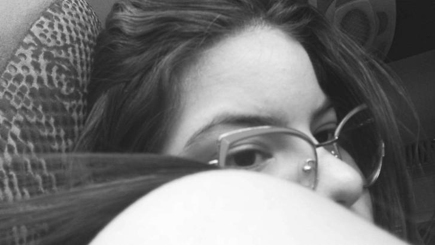

Para mí es más fácil poder expresarte todo lo que siento por aquí que hablándolo en persona. Y aunque sea más sencillo, sé que me quedo corto para describir todo lo que realmente me haces sentir. Cuando estoy frente a ti, experimento una mezcla de emoción, alegría y nervios. He intentado hacer las cosas de la mejor manera, y aunque esto me limita en lo que puedo decir o hacer, es porque realmente te quiero y sé que podemos ser el uno para el otro.
Quisiera decirte que me gustaste, según cómo Natalia me hablaba de ti. En mí surgió un interés en conocerte, y después de haber hablado y salido en algunas ocasiones, pude conocerte tal como eres. Eres una mujer increíble, muy inteligente, responsable, comprometida y, sobre todo, disciplinada; una mujer digna de admiración. Es un privilegio estar contigo, por esa razón he estado dispuesto a esperar el tiempo que sea necesario. Estoy dispuesto a intentarlo, y aunque es cierto que las cosas pueden no salir perfectas, quiero que lo intentemos sin importar lo que pueda suceder, pero siempre con la esperanza de un futuro mejor. Entiendo el tiempo que le dedicas a tu carrera y que es tu prioridad en la vida, y eso lo respeto. No lo veo como un obstáculo para poder tener algo, podemos encontrar momentos para vernos y hablar sin que eso interfiera en nuestros estudios. Sigues gustándome, incluso más que el primer día. He disfrutado mucho las pocas veces que hemos salido, y no sabes cuánto he deseado verte, abrazarte o besarte.
La foto que coloque al lado, esa imagen... Es una de mis favoritas. Cuando la veo, me pareces tan tierna, hermosa y sencilla... Simplemente, eres lo mas lindo que puede existir. Jenny, me gustaría que te des y me des la oportunidad, estar juntos y construir algo verdaderamente sincero y hermoso. Piénsalo, yo tengo muy claro lo que quiero.

Por último, me gustaría que saliéramos a cenar, pasar un rato agradable juntos y disfrutar de tu compañía. Si es posible, el viernes a las 7 p.m.